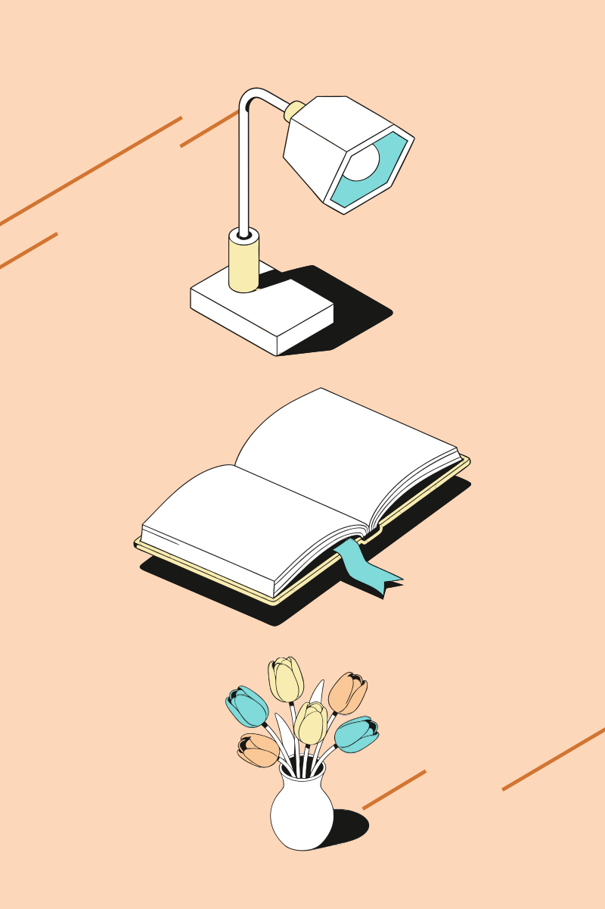
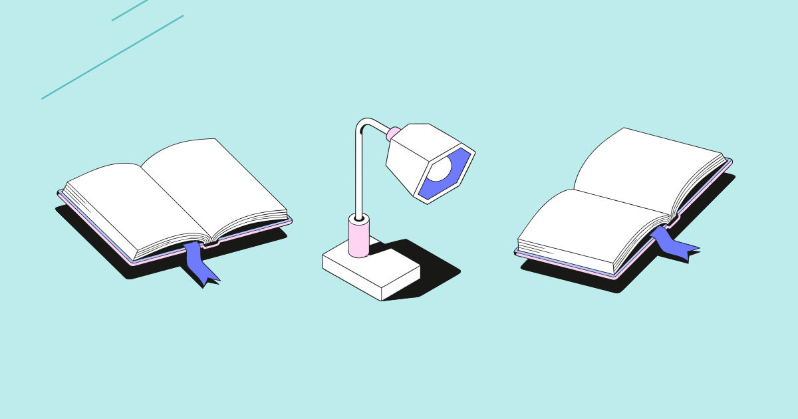

Знания и связь
Сборка по названиям: книга, телефон, монета. L, квадрат, фиолетовая схема.
Скачать SVGИсходники SVG и готовые планы собираются тем же движком, что используется в плагине. Это локальные примеры, без обращения к API. Для проверки двух живых сценариев запустите плагин по README.
Сборка по названиям: книга, телефон, монета. L, квадрат, фиолетовая схема.
Скачать SVG
Сборка по названиям: лампа, книга, цветы. S, вертикальный формат, оранжевая схема.
Скачать SVG
Локальное исполнение подготовленного JSON-плана: две книги с наклоном к центру и лампа между ними. Это пример формата ответа ИИ, не сохранённый ответ реального API.
Скачать SVG